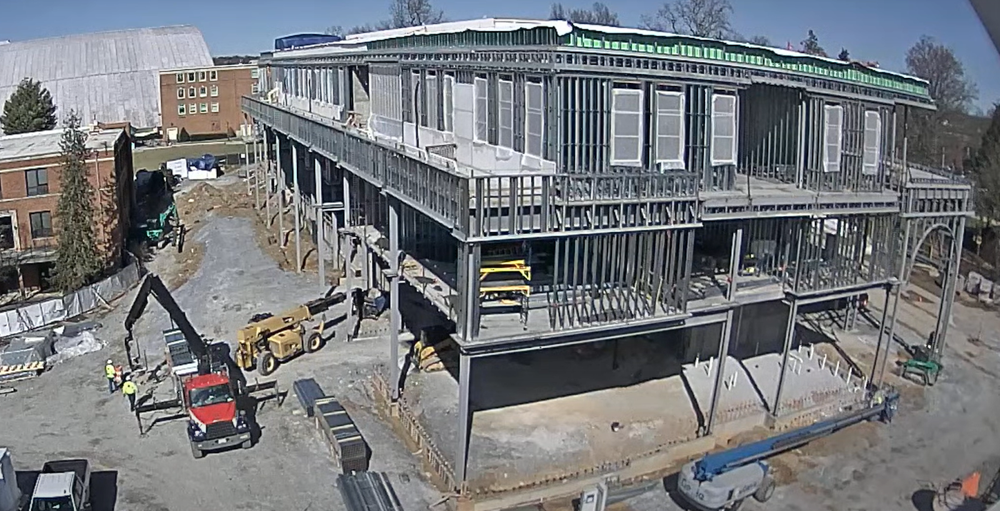
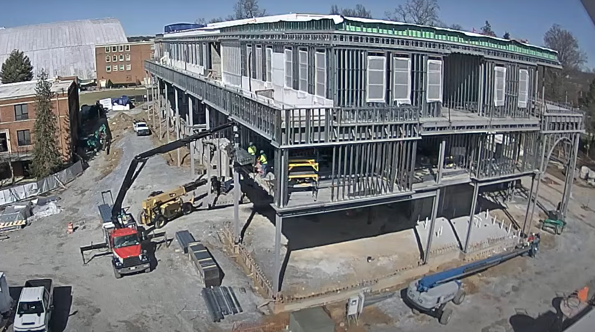
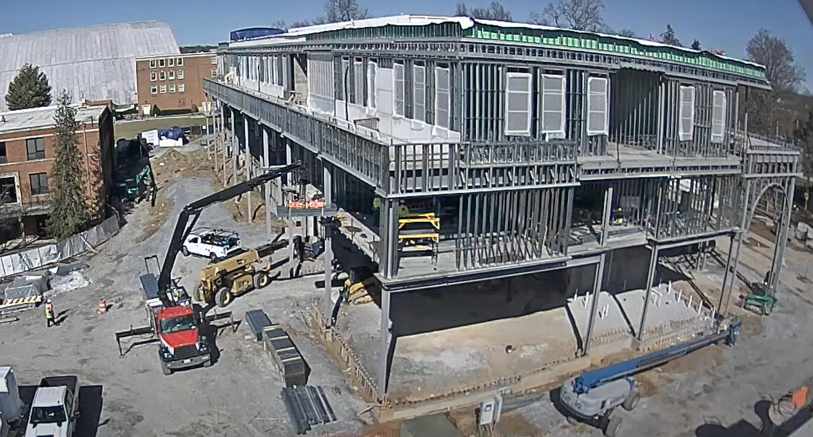

On February 7th, the site was clean and vehicles were easily able to access the site. The machines present on site are a boom lift and a boom forklift. There are two pickup trucks on camera, but there are vehicles that pass by occasionally. Some materials were stacked near the building, and a traffic cone was positioned in the middle of the intersection near the truck crane forklift.
At approximately 12:36 PM, the boom forklift moved materials closer to the building. Two construction workers entered the designated work area on the second floor. Walking from the first to the second floor took about one minute. Shortly after, the forklift was loaded and began lifting materials to the second floor. Before unloading the materials the forklift aligned its bucket into position which took around ten minutes.
The workers started unloading the materials and completed the task by 1:03 PM, taking approximately 18 minutes. They then repeated the same process, with the next cycle finishing at 1:16 PM, reducing the cycle time by five minutes. With the cycle time shortened, this suggests the team is more familiar with the process which improves efficiency.
The materials transported to the second floor were used to construct a metal-framed structure along the outer edge. Earlier photographs show a gap where a yellow shelf was placed, while later images reveal the shelf covered by approximately seven to eight feet of framing. The frame was assembled using vertical metal slabs, which were positioned and secured into place.
On the second floor, three to four workers were actively engaged in the construction process. However, they were not all focused on the same section; another group was working on the rightmost side of the floor. The truck crane forklift delivered three additional units before leaving at approximately 1:47 PM.
It took a team of three to four workers around 40 minutes to complete six to seven feet of framing on the left side. Given that the shorter side of the building is estimated to be 45 feet long, a continuous effort without breaks would require approximately five hours to fully complete the framing along that section. However, external factors such as worker fatigue, material availability, coordination between teams, and environmental conditions could influence the actual completion time. After the team breaks for the day, they’ll leave the leftover materials near the building to continue working on their task the next day for better efficiency.